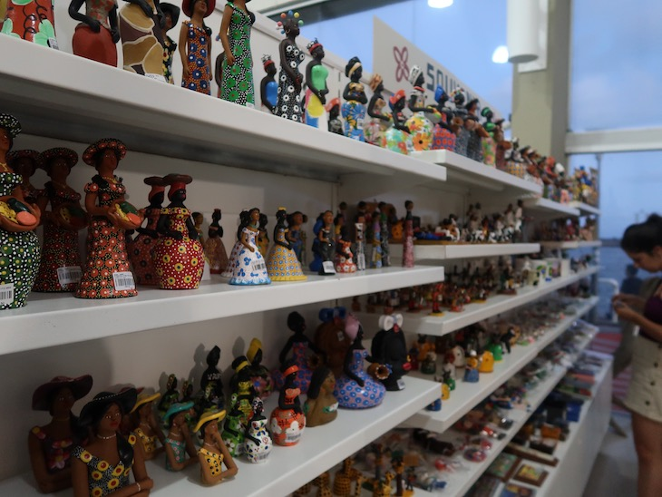
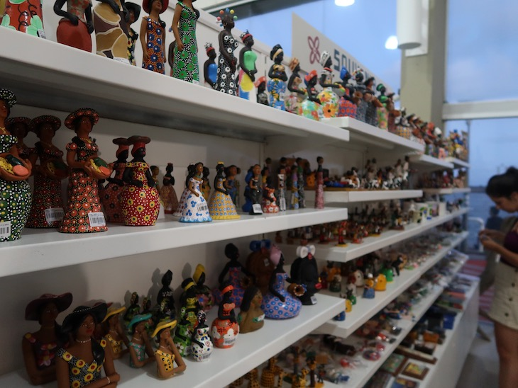

Esse ponto turístico de Recife funciona em dois sentidos: é uma grande galeria que expõe as obras dos artesãos e artistas de todo o estado e também uma central de vendas, pois você pode comprar tudo o que está exposto no local.
Mesmo que a ideia não seja levar nada, entre e confira. Tem peças em barro, algodão, tecido, madeira, palha, couro e inúmeros outros materiais.
É impossível não querer levar alguma coisa para casa. O espaço reflete bem o que o Pernambuco é: diverso, colorido, alegre e cheio de emoção. É muita peça linda! Se você gosta de decoração e objetos regionais, se prepare!